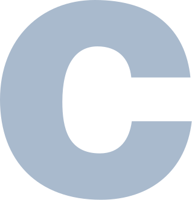

- Sintaxe: pode ser tão simples ou tão complexa como o seu projeto necessitar.
- Portabilidade: há compiladores de C para quase toda plataforma hoje em dia.
- Rico em bibliotecas: Milhões de bibliotecas de todo tipo: Jogos, Simulação, Renderização, ETC.
- Fundação de outras linguas: Ao aprender C, você ganha conhecimento de OUTRAS LINGUAGENS, Como C++, Java, Python, que são todas inspiradas/baseadas em C
| |

Logo da linguagem C |